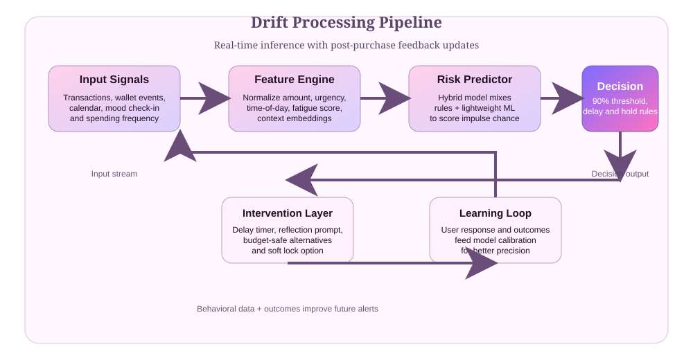

68%
of impulse decisions come from emotional spikes.
Impulse Spending Assistant
Drift reads your spending context, estimates risk in seconds, then triggers a soft intervention: pause, suggest alternatives, and protect your monthly targets.
Demo-only interface. Not connected to bank APIs. Designed for your product landing page.
68%
of impulse decisions come from emotional spikes.
2.7x
better budget stability using timed cooling prompts.
24 / 7
signal processing using context, urgency, and category behavior.
Built for control
Drift scores purchases using amount, urge pressure, time context, and current budget state.
Dynamic hold timers and reflection prompts are generated for each decision instead of rigid limits.
Feedback from each action updates thresholds and improves future predictions to reduce friction.
Processing pipeline
Collect amount, category, urgency, time window, and user state values.
Apply weighted risk logic and machine scoring rules on the current request.
Choose delay and suggested alternatives if risk crosses thresholds.
Record outcomes and refine predictions from user confirmations and skips.
Architecture view

Signal ingestion, scoring, intervention, and learning are linked in a feedback loop for steady decision quality improvements.
Live predictor